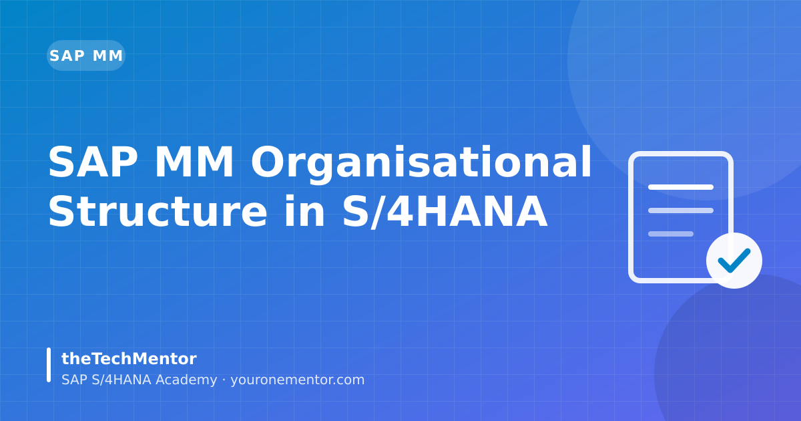

/SCMTMS/LOC3/SCMTMS/ZONE/SCMTMS/RES01
If you come from MM or EWM, the first surprise in SAP Transportation Management is that there is no company code, plant and storage location hierarchy to lean on. TM has its own organisational model, and almost every document you create depends on master data that does not exist in your ERP material or vendor screens in the same form.
This guide explains SAP TM organisational structure and master data from the viewpoint of a logistics consultant. You will learn how TM organisational units are built and linked to sales and purchasing, which master data objects you must create before the first freight order, and how they relate to the ERP objects you already know. We also cover the errors that appear when this foundation is wrong.
- TM org units are Organizational Management objects maintained with PPOME and carry sales, purchasing and planning-related functions.
- Every ERP sales and purchasing organisation used in transportation needs a matching TM org unit.
- Customers, shippers, consignees and carriers are all Business Partners; carriers need the supplier role to be settled.
- Locations (/SCMTMS/LOC3) represent physical places and should be generated from ERP objects wherever possible.
- Zones keep lane and rate maintenance manageable; resources and material weight and volume drive capacity checks.
- Most TM go-live defects come from missing master data, so validate org units, locations and BPs before testing planning.
- 1Build org units (PPOME)Create sales and purchasing org units and assign company codes.
- 2Create business partners (BP)Set up shippers, consignees and carriers with correct roles.
- 3Maintain locations (/SCMTMS/LOC3)Generate or create plants, customer sites, ports and terminals.
- 4Define zones and lanesGroup locations into zones and create lanes with modes and carriers.
- 5Set up resources and product dataMaintain vehicles and verify material weight and volume.
- 6Test with a real orderCheck that the ERP order creates a requirement with correct organisation.
01Why TM needs its own organisational model
In MM, the organisational structure answers the question "who owns the stock and who buys it". In TM, the question is different: "who sells the transportation service, who buys it from a carrier, and who plans it". A freight order does not post stock, so plant and storage location are irrelevant to it. What matters are the organisational units that carry sales and purchasing responsibility.
That is why TM uses Organizational Management (the same HR-style object type O org units you may have seen in workflow) instead of a pure Customizing hierarchy. Org units are master data, not configuration, so they are created in each system and transported only through manual rebuild or data migration. Plan for this early, because a missing org unit in the quality system is a classic cutover gap.
If you want the ERP-side picture first, read the SAP MM organisational structure guide and the SD equivalent. Then come back, because TM reuses the vocabulary (sales organisation, purchasing group) but not the objects.
02The TM organisational structure: org units and their functions
A TM organisational structure is a tree of organisational units maintained with PPOME (Organizational Management). Each unit receives functions that tell TM what the unit may do. The same unit can hold more than one function in small implementations; larger setups separate them.
| Org unit function | Used in | Typical example |
|---|---|---|
| Sales organisation | Forwarding orders, freight settlement towards customers | Logistics Sales West India |
| Sales office / sales group | Sub-structure below the sales organisation, used for responsibility and reporting | Mumbai Sales Office |
| Purchasing organisation | Freight orders and freight settlement with carriers | Transport Purchasing India |
| Purchasing group | Buyer or planner team responsible for carrier agreements | Road Freight Group |
| Planning (transportation planning) responsibility | Controls which planners see which documents | Pune Dispatch Planning |
Each org unit in the tree can also be assigned the company code it settles in, which is how TM later knows where to post accruals and invoices. Keep the tree shallow. Three levels (company-level unit, sales or purchasing unit, group or office) are enough for most Indian 3PL and manufacturing clients.
03Mapping TM org units to the ERP structure
The cleanest design principle is a simple one: every ERP sales organisation and purchasing organisation that will take part in a transportation process needs a matching TM org unit with the corresponding function. The order-based transportation requirement created from a sales order or purchase order carries the ERP organisational data, and TM derives its own organisation from it.
- List the ERP sales organisations, distribution channels and purchasing organisations involved in outbound and inbound transport.
- Decide whether TM will use the same keys or its own naming. In embedded TM, matching keys keep support simple.
- Create the TM org units in
PPOMEand set the sales or purchasing function flags. - Assign the org units to the company codes used for freight settlement.
- Test with a real sales order: confirm the order-based transportation requirement shows the right sales organisation, then check the freight order for the purchasing organisation.
For how the order lands in TM and which ERP documents feed it, the end-to-end logistics integration article shows the full chain from sales order to delivery-based requirement.
04Business partners in TM: shipper, consignee and carrier
TM does not have a separate customer or vendor master. Everything is a Business Partner maintained with BP. The roles decide what the partner can do. A customer BP serves as shipper or consignee, and a supplier BP serves as a carrier or as a party in an inbound shipment.
For carriers, the vendor-side role is needed so that freight settlement can create a supplier invoice or self-billing document. On top of that, TM adds carrier-related data such as the carrier profile, which holds attributes used by planning and carrier selection (for example the transportation mode the carrier serves). If you already know the vendor BP setup, the Business Partner for vendors guide covers roles, grouping and number ranges that apply unchanged here.
| Partner type in TM | BP basis | Why it matters |
|---|---|---|
| Shipper | Customer or supplier BP | Ship-from party on forwarding orders |
| Consignee | Customer BP | Ship-to party, linked to a delivery location |
| Carrier | Supplier BP plus carrier data | Freight tendering, carrier selection, freight settlement |
| Ordering party | Customer BP | Basis for sales organisation and charge calculation |
05Locations: the backbone of TM master data
A location is the TM representation of a physical place where goods are loaded, unloaded, transshipped or stored. Every source and destination in a freight unit is a location, not a plant or an address. Maintain locations with /SCMTMS/LOC3.
Locations have a type (for example plant, distribution centre, shipping point, customer, supplier, port or terminal) and carry geo-coordinates, time zone, address and optionally a transportation zone assignment. The coordinates matter if you plan to use distance and duration calculation through a geo service, because TM cannot calculate a route without them.
How locations are created
- Automatically from ERP objects: plants, shipping points, customers and suppliers can be turned into locations through integration. This is the standard path for order-based processes.
- Manually: ports, terminals, customer pick-up points and any place without an ERP object are created directly.
Location and business partner link
A customer or supplier location is tied to its business partner, so changing the address on the BP should update the location. Verify this after the first address change in testing. Locations tied to ERP plants also connect the TM view to the warehouse: when the plant location links to an EWM warehouse, delivery data flows to the right physical site. See the embedded EWM setup walkthrough for the warehouse side of that link.
06Zones, lanes, resources and other network master data
Once locations and partners exist, you describe the transportation network. These objects allow TM to find routes, choose carriers and calculate charges.
| Object | Purpose | Access |
|---|---|---|
| Transportation zone | Groups locations, postal code ranges or regions for lane and rate determination | /SCMTMS/ZONE |
| Transportation lane | Defines allowed connections between locations or zones, with transportation mode and carrier | SAP menu: Transportation Management > Master Data > Transportation Network |
| Default route | Fixed multi-stop route used for standard flows | Same master data area |
| Resource (vehicle, trailer, equipment) | Capacity, availability and calendar of own or subcontracted assets | /SCMTMS/RES01 |
| Means of transport | Type of vehicle or vessel with capacity data | Transportation Network master data |
| Calculation sheet and rate table | Charge calculation for forwarding and freight settlement | Master Data > Charge Management area |
Zones are the practical way to avoid thousands of lanes. Instead of one lane per customer, you create a lane from the plant location to a zone such as "Karnataka" and let determination find the matching destination. The same logic applies to rate tables: a rate by zone pair is easier to maintain than a rate per postal code.
07Product data and ERP integration points
TM reads the material master from ERP, but only some fields matter. Weight, volume, gross dimensions and units of measure drive capacity checks, so wrong data here gives wrong vehicle loads. The detail of each view is covered in the material master views guide.
The transportation-relevant fields are gross weight and volume in the basic data view, the dangerous goods data when applicable, and the TM-specific classification used for freight code determination (the material freight group). Missing weight is the most common reason a freight unit cannot be assigned to a vehicle resource.
Order-based and delivery-based requirements
Master data and organisation are used when the ERP document is converted into a TM requirement document. The conversion uses a transportation relevance check (configured in the ERP-side TM integration settings) to decide whether a sales order, purchase order or delivery goes to TM at all. Without the relevant item category or document type being marked, nothing arrives in TM and the organisation tree is never exercised.
08Troubleshooting: common master data and organisation errors
Most TM go-live issues trace back to missing master data rather than faulty planning logic. The table below lists what you will actually see and the fix. These are symptom descriptions, not exact system texts, because wording changes between releases.
| Symptom | Likely cause | Fix |
|---|---|---|
| Order does not appear in TM after saving in ERP | Document type or item category not transportation-relevant, or location missing | Check TM relevance settings and confirm plant and partner locations exist |
| Freight order has no purchasing organisation | Org unit lacks purchasing function or determination finds nothing | Set the function in PPOME and retest determination |
| No carrier proposed during planning | No lane or lane has no carrier, or carrier profile missing | Create the lane and assign carrier and mode |
| Route or duration cannot be calculated | Missing geo-coordinates or distance service not configured | Maintain coordinates in /SCMTMS/LOC3 |
| Freight unit cannot be assigned to a vehicle | Product weight or volume missing, or resource capacity too low | Correct material master and resource data |
| Settlement document fails for carrier | Supplier role or company code data missing on the BP | Extend the BP with vendor role and company code data |
09Interview questions on this topic
Interviewers for TM roles usually test whether you understand that master data comes before planning. Practise answering with a concrete example from a sandbox, for instance a plant location, a customer zone and one road carrier lane built from scratch.
- What is the difference between a location and a plant?
- Why use transportation zones instead of individual lanes?
- Which business partner roles does a carrier need for settlement?
- What happens if material weight is missing?
- How would you keep ERP and TM master data consistent in embedded TM?
Pair this preparation with the embedded vs standalone TM article, since the architecture question usually follows the master data one.
Get the 40+ lesson playlist, the most-asked interview questions and our 90-day roadmap on WhatsApp.
?Frequently asked questions
What is the organisational structure in SAP TM?
It is a tree of organisational units created in Organizational Management with PPOME. Units carry functions such as sales organisation, sales office, sales group, purchasing organisation and purchasing group, and are linked to company codes for settlement.
Is the SAP TM org structure the same as the MM or SD structure?
No. TM reuses terms like sales and purchasing organisation but stores them as org units, not as Customizing entries. It has no plant or storage location concept for freight documents.
Which master data must exist before creating a freight order?
You need org units, business partners (at least the carrier and the parties), locations for source and destination, and normally transportation lanes or a default route. Resources are needed if you plan with own vehicles.
What is a location in SAP TM and how is it maintained?
A location is the TM object for a physical place such as a plant, customer site or port. It is maintained with /SCMTMS/LOC3 and can be generated from ERP plants, customers and suppliers.
Do I need a separate vendor master for carriers in TM?
No. A carrier is a business partner with the supplier role plus TM carrier data. The supplier role is what allows freight settlement to create a supplier invoice.
Why use transportation zones in SAP TM?
Zones group locations or postal code ranges so you can define lanes and rates once for a region. This cuts maintenance effort compared with a lane or rate for every individual location.
Does embedded TM simplify master data compared to standalone TM?
Yes. In embedded TM the business partner, material and org data sit in the same S/4HANA client, so there is less replication and mapping than with standalone TM connected through integration.
 Mastering SAP FICO Organisational Structure in S/4HANA: Company Code, Controlling Area, and Chart of Accounts
Mastering SAP FICO Organisational Structure in S/4HANA: Company Code, Controlling Area, and Chart of Accounts
Mastering SAP MM Organisational Structure in S/4HANA: Company Code, Plant, Storage Location, & Purchasing Org Mastering SAP SD Organisational Structure in S/4HANA for Logistics Consultants
Mastering SAP SD Organisational Structure in S/4HANA for Logistics ConsultantsLearn SAP hands-on with theTechMentor
Live weekday & weekend batches or 24/7 recorded courses, with S/4HANA practice server access and interview preparation.